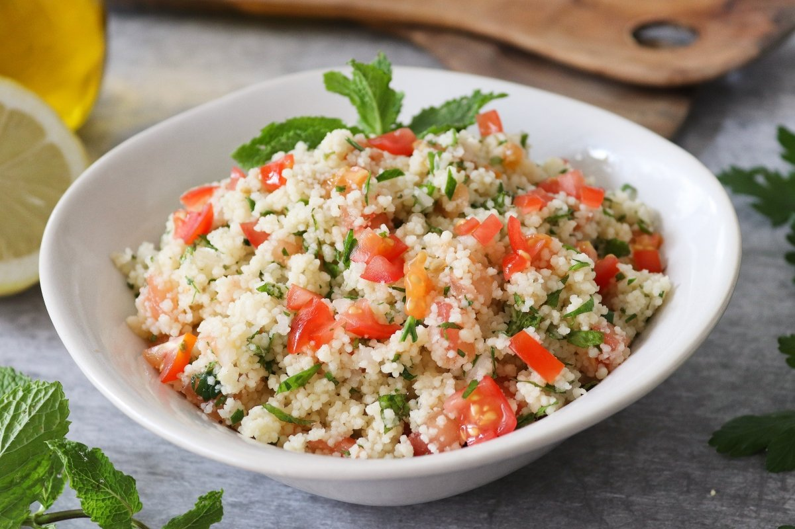

Tabule
El tabbūle es una ensalada típica de la cocina shami o levantina, que consiste en perejil cortado finamente, bulgur cocido y otros ingredientes. Es uno de los más tradicionales aperitivos del mezze, pequeños platos servidos en conjunto.
Tiempo preparacion
- Remojar el bulgur: 20-30 min
- Preparar los ingredientes: 15-20 min
- Mezclar los ingredientes: 5-10 min
- Tiempo total: Aproximadamente 40-60 min
Instrucciones
- Coloca 1/2 taza de bulgur en un tazón y cúbrelo con 1 taza de agua caliente. Deja reposar durante 15-20 minutos o hasta que el bulgur haya absorbido el agua y esté suave. Escurre el exceso de agua si es necesario.
- En un tazón grande, combina el bulgur con el tomate, pepino, cebolla, perejil y menta.
- Añade el jugo de limón, aceite de oliva, sal y pimienta. Mezcla bien.
- Refrigera durante al menos 30 minutos antes de servir para que los sabores se mezclen.